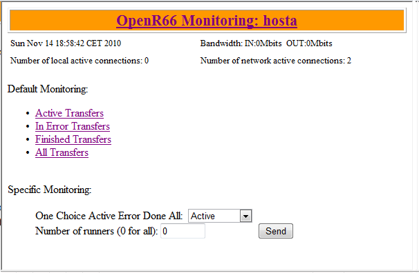
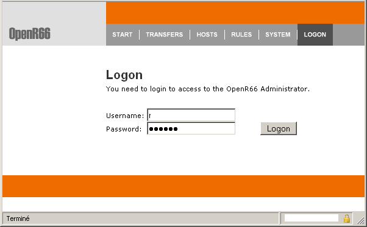
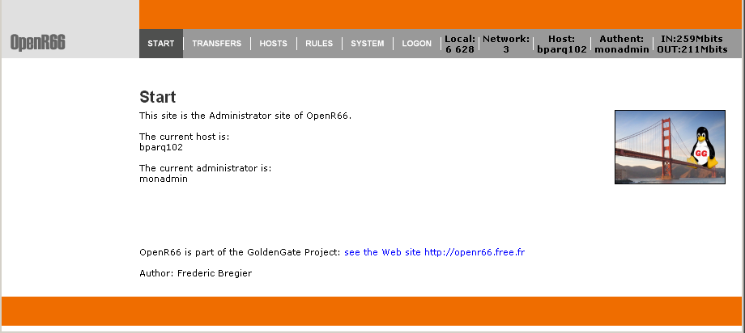
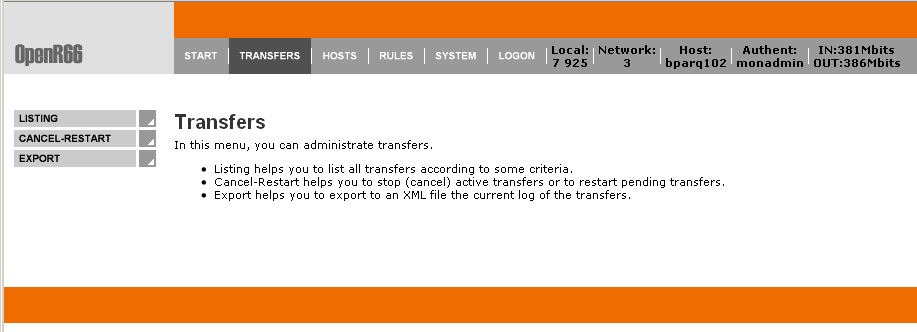
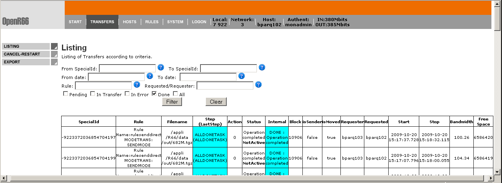
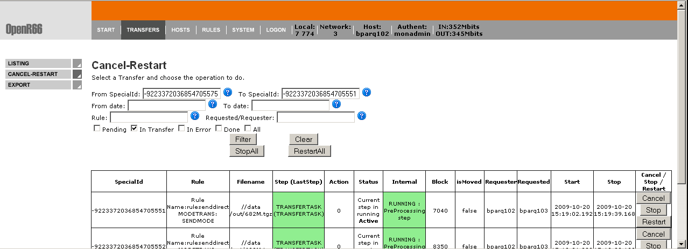
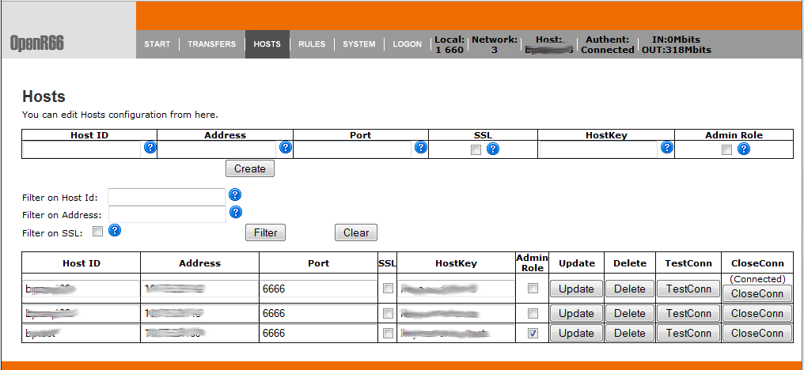
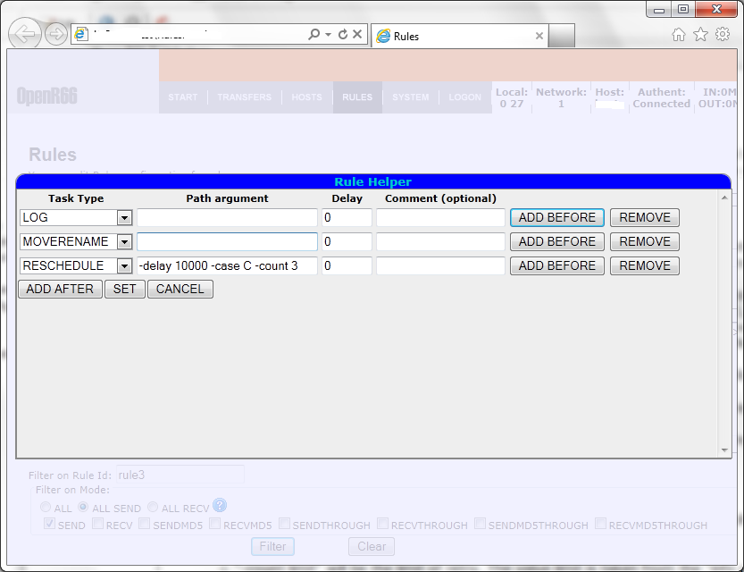
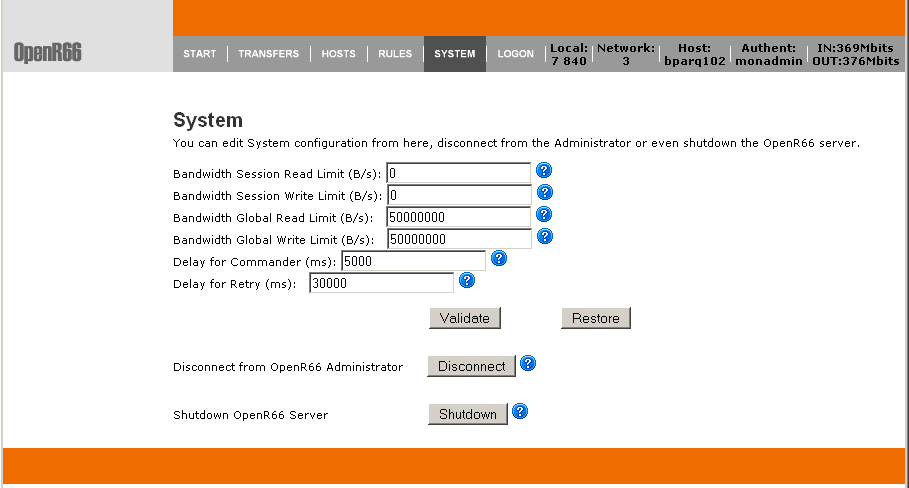

|
| ||||||||||||||||||||
|
|
Waarp R66-AdminWaarp R66 Server comes with an administrator in HTTPS mode with authentication and a supervision in HTTP mode without authentication.
The supervision enables only to show information on transfers (active or not) and is dynamically reloaded every 10 seconds. The access of the supervision is at http://host_address:8066/ (8066 port can be changed in the configuration file). A specific URL http://host_address:8066/status enables access to simple status where it returns a 200 OK code if everything is OK, else it returns a small page with some info and a status as Internal Server Error (500) denoting that some errors were found. Another specific URL http://host_address:8066/statusxml enables access to detailed status where it returns an xml containing various informations as followed. Note: statusxml?NB=xxx&DETAIL=1 means how far in the past as xxx seconds this status should look for and is the given information presenting a detailed information - DETAIL=1 - or only short information - DETAIL clause absent -.

Example of XML output:
A SNMP agent is also available in OpenR66 from version 2.1.1. It includes the possibility to poll values from a SNMP manager or to push value as notification to a SNMP manager using trap or inform model.
The administrator allows to take action on transfers (stop, restart, ...), export logs, handle hosts and rules, and some specific internal functions. It is accessed at https://host_address:8067/ (8066 port can be changed in the configuration file). Note the 's' in https. You will need to accept the security concern from your browser (specially if the SSL key is generated by yourself).
Here are some pictures from the administrator:
The Logon screen 
The Start screen 
The Transfers main screen 
The Transfers Listing screen 
The Cancel-Restart Transfer screen 
The Hosts Screen  The Rules screen  The System screen  A new option allow to "block" or "unblock" new requests, such that someone can wait that all current requests are over to shutdown his/shis Waarp server without interrupting requests.
|